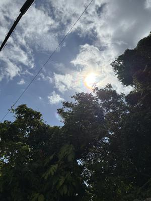
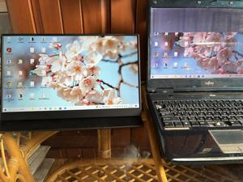
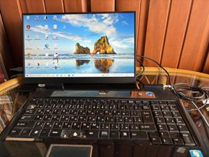
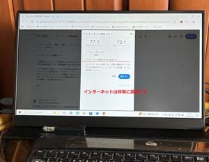

うるがいの話 ある日
最新: Windows10のノートパソコン【うるがいの話 ある日】とは 一日だけのプログです
『うるがいの話』の最新一日だけのプログで、通信料が少なく経済的だ。カニの画像をクリックすると全ての日付が載る『うるがいの話』サイトを表示します
|
|
【うるがいの話】 うるがい(ｳﾙｶﾞｲ urugai)とは、『もずくがに』の名前でとても大きくなります。 |
|---|---|
|
|
【カミマヤーの話】 猫のことを方言でマヤーといいます。カミマヤー（kamimayaa）とは、神の猫のことです。 |
|
【たながぁの音楽】 たながぁ（ﾀﾅｶﾞｰ tanagaa）とは手長えびのことで、何種類かあり大きいのは車 エビぐらいになります。 |

|
【ぶながぁの話】 ぶながぁ(ﾌﾞﾅｶﾞｰ bunagaa)とは、赤い髪の毛、赤い身体、そして身長は１ｍ２０ｃｍ ぐらい、川の蟹を食べているの目撃された。場所は沖縄県国頭郡大宜味村のと ある村僕の隣近所に住んでいる爺さんから、聞いた話です。 |
|
|
【ギーマの話】 ギーマ(giima)とは、山原の里山に咲くスズランに似た、 花を付けます。実は食べられます、 気が付くと口の周りが紫になっています。 |
2026年08月06日 (木）Windows10のノートパソコン
15:19

題名 ：【残り2日】パソコン無料回収＆キャンペーンは7月31
日まで！
差出人 ：リネットジャパンi
使われなくなったウィンドウズ１０のノート端末、そろそろ廃棄
しようかと考えていたところ
さらに1年間、安心して利用
Windows10拡張セキュリティ・アップデート(ESU)の保護期間を延長
新しい PC への移行には時間がかかることを理解しています。
移行期間中もお客様に安全にご利用いただけるよう継続的に取り組
んでいる一環として、個人向けデバイスを対象としたWindows10拡
張セキュリティ・アップデート(ESU)の提供期間をさらに1年間延長
します。
これにより、サポートは2027年10月12日まで提供されます。
現在ESUに登録されているお客様には、保護期間が自動的に1年間延
長されます。お客様側での操作は不要です。延長は自動的に適用さ
れます。
とマイクロソフトからメールが届いた。フムフム、せっかくなので
壊れた液晶パネルを取り外し、画面は外付けモニタでスッキリと。
壊れた液晶パネル

壊れた液晶パネルを取り外した。

壊れた液晶パネルには、Wi-Fiやブルートゥースの受信装置が付い
た。回線は、直接ケーブルでマウスの直付けにした。インタネット
回線速度は、非常に高速ですと表示された。

２０１０年に子供のために買ったノートパソコン、この作業のあと
押入れにしまった。マ、なんかのタイミングで使うことがあるかも
これを打ち込んでいるＰＣ２号も押入れに入れて、ＰＣ１号が壊れ
た２０２４年１２月２６日から取り出し使い始める。
ところで、鍵屋さんから連絡がないので昨日電話した。今日の昼過
ぎ連絡があった、『手配ミスです』とまた連絡しますと。マ、こん
なもんですよ。